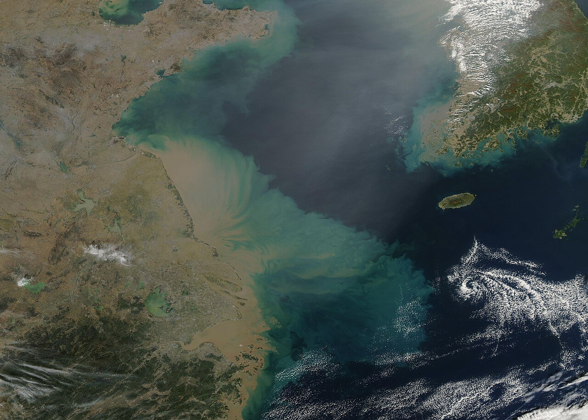
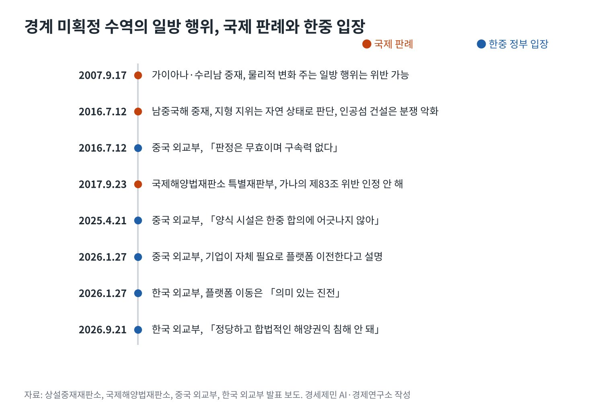

[서해 현안] 중국 서해 구조물 설치, 국제법 위반 소지와 외교 대응
유엔해양법협약 제74조 3항 「과도기 자제 의무」, 판례는 「물리적 변화」에 무게
중국은 제298조 선언으로 경계분쟁 강제 재판 배제, 남중국해 판정도 「무효」
관리 플랫폼 1월 이동, 양식장 2기는 9월 대화에서도 결론 없어
AI경세제민=김갑봉 기자 | 중국이 서해 한중 잠정조치수역에 설치한 구조물을 두고 국제법 위반 소지가 꾸준히 제기된다. 한국 외교부는 9월 21일 톈진 해양협력대화에서 정당하고 합법적인 해양권익이 침해돼선 안 된다는 입장을 밝혔다.
중국 외교부는 양식 시설이 한중 합의에 어긋나지 않는다고 맞선다. 관리 플랫폼 1기는 1월 수역 밖으로 옮겼지만 양식장 선란 1호와 2호는 그대로다. 위반 여부는 어느 조항을 어떻게 읽느냐에 달려 있다.
유엔해양법협약이 정한 세 가지 기준
첫째는 관할이다. 유엔해양법협약(UNCLOS) 제56조와 제60조는 배타적경제수역(EEZ)의 인공섬과 시설, 구조물을 연안국 관할에 둔다. 제60조 3항은 설치 사실을 알리고 존재를 경고할 수단을 유지하라고 정한다.

둘째는 효과다. 제60조 8항은 구조물이 섬의 지위를 갖지 않고 경계획정에 영향을 주지 않는다고 못 박는다. 구조물이 몇 기든 바다를 나누는 근거가 되지 못한다. 한국이 기댈 수 있는 가장 분명한 조항이다.
셋째는 과도기 의무다. 제74조 3항과 제83조 3항은 경계 합의 전에 최종 합의를 위태롭게 하거나 방해하지 말라고 요구한다. 잠정조치수역처럼 두 나라 주장이 겹치는 바다에서 일방 행위를 판단하는 핵심 기준이다.
국제 판례가 그은 선, 「물리적 변화」
2007년 9월 17일 가이아나·수리남 중재판정은 이 의무의 기준을 제시했다. 중재재판부는 일방적 탄성파 탐사는 의무 위반으로 보지 않았지만 해양 환경에 물리적 변화를 주는 일방 행위는 위반이 될 수 있다고 판단했다.
같은 판정은 시추를 허가한 가이아나도 합의를 방해했다고 봤다. 2000년 6월 3일 시추선을 몰아낸 수리남은 무력 위협으로 협약을 어겼다고 판단했다. 일방 행위도, 힘을 쓴 대응도 함께 문제 삼았다.
2017년 9월 23일 국제해양법재판소(ITLOS) 특별재판부는 가나·코트디부아르 사건에서 가나가 제83조 1항과 3항을 어기지 않았다고 판결했다. 일방 행위가 언제나 위반은 아니라는 판단이다. 결론은 사안마다 다르다.
2016년 7월 12일 남중국해 중재판정은 지형의 지위를 매립 전 자연 상태로 판단했다. 중국이 필리핀 EEZ의 미스치프 암초에 인공섬을 만들어 분쟁을 악화했다고 봤다. 구조물이 지위를 만들지 못한다는 원칙을 보여 준다.

선란 구조물에 대입하면
선란 1호와 2호는 4개의 대형 케이블로 해저에 고정된 반잠수식 시설이다. 아산정책연구원 심상민 선임연구위원은 이 점이 고정 시설이라는 주장을 뒷받침할 수 있다고 봤다. 물리적 변화의 기준과 맞닿는 대목이다.
그러나 그는 설치만으로 명백한 위반이라 단정하긴 어렵다고 분석했다. 구조물을 되풀이해 늘리거나 해역 주장의 근거로 쓸 때 제74조 위반이 될 수 있다는 판단이다. 환경영향평가를 했는지 확인되지 않은 점도 짚었다.
조사 방해는 별개 쟁점이다. 2025년 2월 26일 한국 조사선 온누리호는 중국 해경과 민간 고무보트에 막혀 약 2시간 대치했다. 아산정책연구원은 이를 협약 제87조와 제13부가 인정하는 해양과학조사 권리 침해로 봤다.
한중어업협정의 해석도 갈린다. 미국 전략국제문제연구소(CSIS)와 인도 마노하르 파리카르 국방연구분석원(MP-IDSA)은 협정이 잠정조치수역 안 영구 시설을 금지한다고 본다. 아산정책연구원은 협정이 어업만 규율한다고 봤다. 협정 해석만으로 결론을 내기 어렵다.
법정으로 가는 문은 좁다
국제 재판은 쉽지 않다. 중국은 2006년 8월 25일 유엔해양법협약 제298조 선언으로 해양경계 분쟁을 강제 분쟁해결 절차에서 뺐다. 중국 외교부는 2016년 남중국해 판정이 무효이며 구속력이 없다고 밝혔다.
아산정책연구원은 두 갈래를 제시했다. 하나는 두 나라가 특별협정을 맺어 국제사법재판소(ICJ)에 경계 문제를 맡기는 길이다. 다른 하나는 중국이 구조물을 해역 주장의 기점으로 쓸 때 제60조 8항 해석을 묻는 소송이다.
뒤의 소송은 경계획정 자체가 아니라 구조물의 법적 지위를 다룬다. 그래서 제298조 선언의 배제 범위 밖일 수 있다고 아산정책연구원은 분석했다. 최후의 수단이지만 쥐고 있어야 할 카드다.
외교 트랙의 현재
외교는 두 갈래로 움직인다. 1월 5일 베이징 정상회담에서 두 나라는 차관급 경계획정 회담을 올해 안에 재개하기로 했다. 구조물 문제는 별도 경로로 다룬다고 한국 외교부가 설명했다.
1월 27일 관리 플랫폼이 수역을 떠나자 한국 외교부는 「의미 있는 진전」이라고 평가했다. 중국 외교부는 기업이 자체 필요에 따라 옮겼고 양식 시설에 대한 입장은 그대로라고 밝혔다. 5월 7일 제15차 경계획정 국장급 회담도 결론 없이 끝났다.
9월 톈진 대화에서 두 나라는 구조물 문제를 상호 존중의 정신으로 계속 협의하기로 했다. 철거나 추가 설치 제한, 공동 조사에는 합의하지 못했다. 다음 대화는 한국에서 열린다.
국제법은 한국 편에 선 조항과 중국이 기댈 틈을 함께 담고 있다. 구조물은 경계를 바꾸지 못하지만 설치만으로 위반이라 단정하기도 어렵다. 한국은 조사와 기록으로 사실을 쌓고, 판례의 기준을 협상장에서 쓰는 외교를 이어가야 한다.
참고문헌
기관 자료
- United Nations, 「United Nations Convention on the Law of the Sea, Part V Exclusive Economic Zone」(제56·60·74조). https://www.un.org/depts/los/convention_agreements/texts/unclos/part5.htm
- United Nations Division for Ocean Affairs and the Law of the Sea, 「Declarations and Statements」(중국 선언 일자 2006년 8월 25일). https://www.un.org/depts/los/convention_agreements/convention_declarations.htm
- Permanent Court of Arbitration, "The South China Sea Arbitration(The Republic of the Philippines v. The People's Republic of China)" Press Release, 2016년 7월 12일. https://docs.pca-cpa.org/2016/07/PH-CN-20160712-Press-Release-No-11-English.pdf
- International Tribunal for the Law of the Sea, Press Release ITLOS/Press 264(Ghana/Côte d'Ivoire 판결), 2017년 9월 23일. https://www.itlos.org/fileadmin/itlos/documents/press_releases_english/PR_264_EN.pdf
- Ministry of Foreign Affairs of the People's Republic of China, 2016년 7월 12일 남중국해 중재판정에 관한 성명, 2016년 7월 12일. https://www.fmprc.gov.cn/nanhai/eng/snhwtlcwj_1/201607/t20160712_8527294.htm
- Ministry of Foreign Affairs of the People's Republic of China, "Foreign Ministry Spokesperson Guo Jiakun's Regular Press Conference on April 21, 2025", 2025년 4월 21일. https://www.mfa.gov.cn/mfa_eng/xw/fyrbt/202504/t20250421_11600794.html
- Korea.net, "China moves structure in Yellow Sea border row with Korea", 2026년 1월 28일. https://www.korea.net/NewsFocus/policies/view?articleId=286552
연구 논문과 보고서
- 심상민, 「중국 서해 구조물 설치의 국제법적 검토」, 아산정책연구원 이슈브리프 2025-13, 2025년 4월 30일. https://www.asaninst.org/wp-content/themes/twentythirteen/action/dl.php?id=99052
- Victor Cha, "Creeping Sovereignty? China's Maritime Structures in the Yellow Sea(West Sea)", CSIS Beyond Parallel, 2025년 12월 9일. https://beyondparallel.csis.org/creeping-sovereignty-chinas-maritime-structures-in-the-yellow-sea-west-sea/
- Jennifer Jun·Victor Cha(CSIS·AMTI), "China Relocates PMZ Structure to Weihai Shipyard", Beyond Parallel, 2026년 2월 2일. https://beyondparallel.csis.org/china-relocates-pmz-structure-to-weihai-shipyard/
- Abhay Kumar Singh, "The Yellow Sea Dispute: Provisional Arrangements and Persistent Deadlock", MP-IDSA Issue Brief, 2026년 1월 22일. https://idsa.in/publisher/issuebrief/the-yellow-sea-dispute-provisional-arrangements-and-persistent-deadlock
- International Law Observer, "Guyana/Suriname Arbitration under the 1982 Law of the Sea Convention", 2007년 9월 27일. https://internationallawobserver.eu/guyana-suriname-arbitration-under-the-1982-law-of-the-sea-convention
언론 보도
- 박준호, "한중 어업협정상 기국주의 적용…타국 국민·어선에 대한 단속 못해", 뉴시스, 2025년 5월 6일. https://mobile.newsis.com/view/NISX20250502_0003162802
- Korea JoongAng Daily, 한중 서해 철골 구조물 분쟁 해설 기사(지면 2025년 4월 30일). https://www.koreajoongangdaily.com/korea/10514945
- 연합뉴스, "S. Korea seeks progress in talks with China on maritime demarcation, steel structures", The Korea Herald, 2026년 1월 7일. https://www.koreaherald.com/article/10650354
- 다음뉴스, "한·중, 청두서 15차 해양경계획정 국장급 회담 개최…결론 아직", 2026년 5월 7일. https://v.daum.net/v/20260507191252118
- 해사신문, "한중, 서해 구조물 다시 테이블에…中 '순수 양식시설' 되풀이", 2026년 9월 22일. http://www.haesanews.com/news/articleView.html?idxno=151332
- 김혜영, "S. Korea Conveys Concern to China over Yellow Sea Structures; Beijing Claims 'Purely Aquaculture Facilities'", SBS, 2026년 9월 22일. https://news.sbs.co.kr/english/article.do?news_id=N1008766309
[사진 출처]
- [사진1] MODIS Land Rapid Response Team, NASA GSFC, "Sediment in the Yellow Sea (MODIS 2019-11-07).jpg", 위키미디어 공용, 퍼블릭 도메인. https://commons.wikimedia.org/wiki/File:Sediment_in_the_Yellow_Sea_(MODIS_2019-11-07).jpg
※ 이 기사는 AI 프로그램 클로드를 활용해 작성했습니다.
관련기사
- [서해 현안] 북한, 유네스코를 이용해 백령·대청까지 NLL 분쟁 확산 노림수
- [서해 현안] 북한 이의제기로 멈춘 백령·대청 세계지질공원 지정
- [동맹과 국방] 군사력 세계 5위 한국, 자주국방은 어디까지 왔고 동맹은 무엇을 요구하나
- [동맹과 국방] 전작권 전환, 한국은 '2028년' 미국은 '2029년 1분기'…12월 안보협의회의가 가른다
저작권자 © AI경세제민 무단전재 및 재배포, AI학습 및 활용 금지